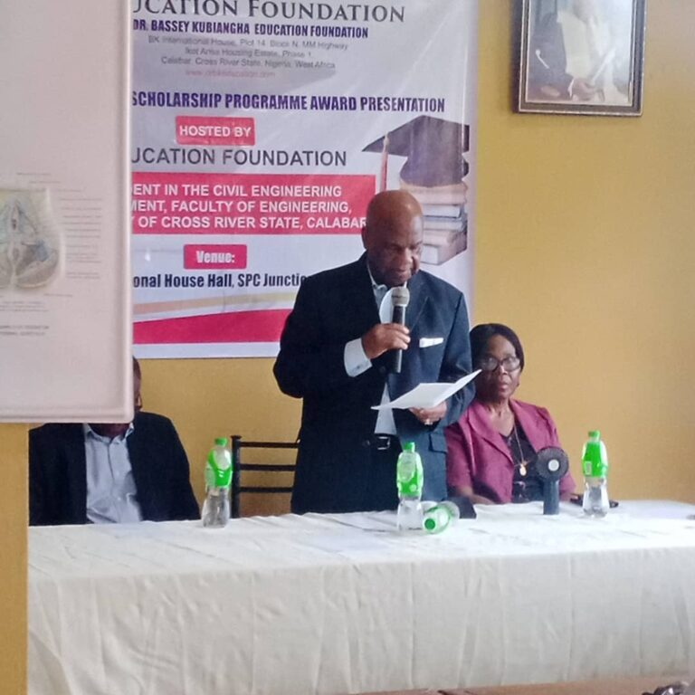
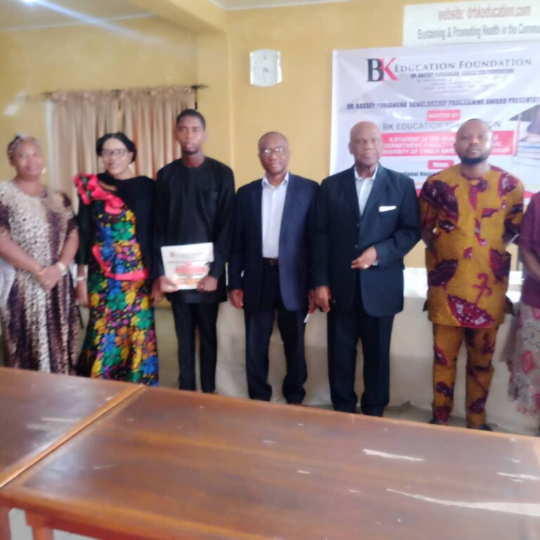
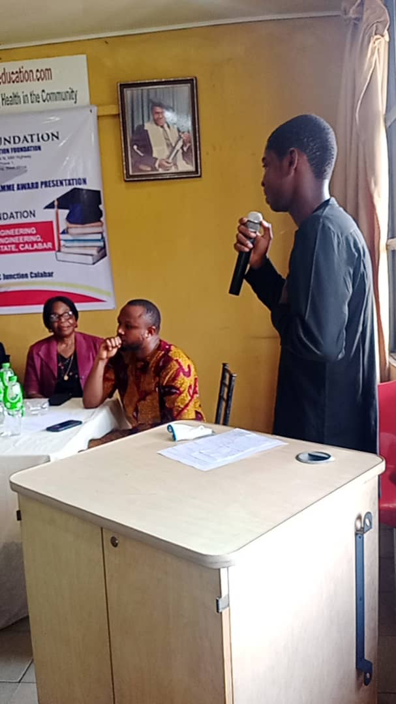

Ongoing
Scholarship award programme
Each year Dr BK Education supports students at the University of Calabar with its scholarship award programme. This has been one of our most consistent achievements. The images below were taken at the 2024 award presentation.


